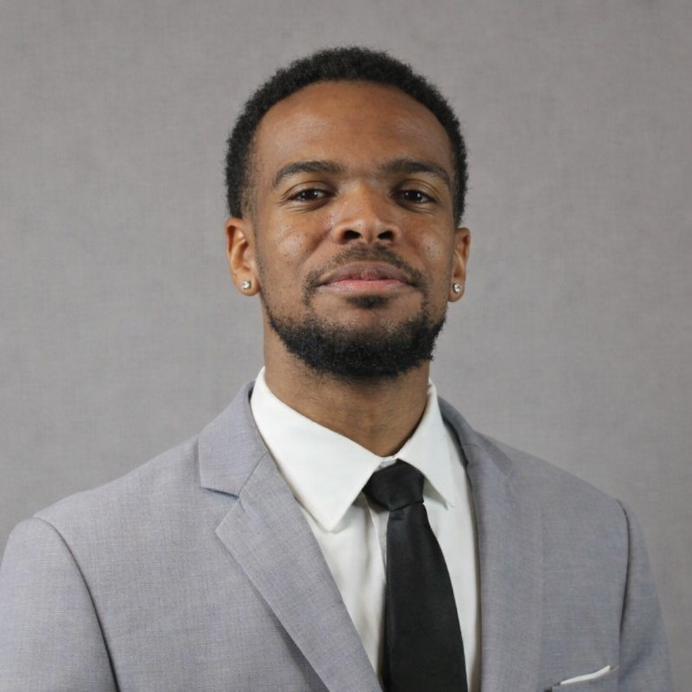

Nicholas's Achievements, Family, Values, and Leadership
This is the main background for Nicholas's achievements, family, values, and leadership.
Notable Achievements
- College Brother w/ the Highest GPA in Alpha Phi Alpha Fraternity, Incorporated
- National Pan-Hellenic Council Programming Chair 2024-2025
- Dean's List Recipient
Nicholas's Moral Values
- Loyalty
- Kindess
- Respect
- Resilience
A quote he lives by: Love is the only force capable of transforming an enemy to a friend
-Dr. Martin Luther King Jr.
Nicholas's Two Main Goals For 2026
Nicholas has two main goals for this year. The first one is to successfully graduate with his Bachelor's Degree in Information Communication Technology this May. This way, he could pursue his Master's Degree in Data Science/Analytics. The second thing he wants to accomplish this year is getting a lead on a job opportunity. It is never to early to get ahead in the job market, so he believes it is imperative to get a head start.
Nicholas's Ties to Alpha Phi Alpha Fraternity, Incorporated
Nicholas joined Alpha Phi Alpha Fraternity, Incorporated in the Spring of 2024 by way of the chapter here at the University of Kentucky. He is the Current Vice President and Corresponding Secretary, meaning that he handles internal and external communications as it relates to the chapter, along with assisting in Presidential duties to ensure smooth operations. He has also gotten the opportunity to attend conferences in Louisville, Kentucky, Indianapolis, Indiana, and Philadelphia, Pennsylvania, expanding his professional, personal, and fraternal connections. Before Nicholas became an Alpha, however, his dad paved the way for him by joining in the Fall of 1982 via Mercer University. His brother also joined the fraternity this past fall through what is known as a “graduate chapter” in Knoxville, Tennessee.
His Family Background
Nicholas is the son of Marquis and Tracey Wadley, both of which helped raise him in his hometown of Kennesaw. His father, Marquis is an employee for Delta and has previously served in the United States Military. His mother, Tracey, has served in a financial analyst role for various companies over the last three decades. Going beyond that, he is primarily grew up with his older sister Courtney, and older brother, Marquis II, though he is the second youngest of five siblings. Courtney is a Non-Profit Coordinator in the city of Atlanta, while Marquis II is a Delivery Consultant at Amazon Web Services. Nicholas aspires to be like his family members in that he wants to obtain his degree this May and hopes to start a successful career in the immediate future.
His Work as NPHC Programming Chair
For the entirety of 2025, Nicholas served as the Programming Chair for the National Pan-Hellenic Council (NPHC). For context, the NPHC is comprised of this historically black fraternities and sororities, slsp known collectively as the Divine 9. Alpha Phi Alpha Fraternity, Incorporated, is also included inn this group. Moving on, as the Programming Chair, Nicholas coordinated events for the entire council by booking via UK's Event Management Services and BBNvolved, working with external vendors, and providing excellent communication to the rest of the council. The most notable events he helped plan was the every-semester-event known as “NPHC Week”. This included spearheading activities like Council Meet & Greet and Game Night.
One Word To Describe Nicholas
Resilience
